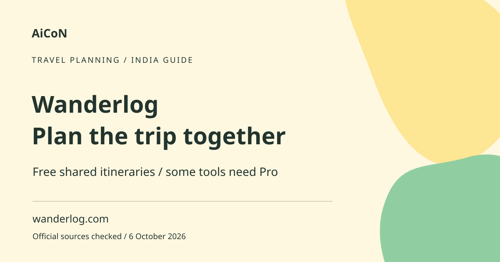

Wanderlog: free group trip planning and Pro limits
Wanderlog combines an itinerary, places and map for planning trips with other people. Basic planning is free. Pro adds extra features, so check which tools your group needs before assuming the whole trip can be managed offline at no cost.

What is an itinerary?
An itinerary is your day-by-day travel plan. Wanderlog lets you collect places, organise days and collaborate on a plan. It can also bring booking information together. A plan in the app is not a reservation: flights, hotels and tickets still need their own confirmed bookings. Recommendations and route times are planning aids, not guarantees.
Why it can help Kerala travellers
A family road trip or a group journey can be easier when everyone sees the same places and day plan. Put realistic time between stops and account for breaks, traffic and local conditions. Verify opening hours, ticket rules and transport times with the operator. Do not rely on an old itinerary or automatically suggested attraction as proof that a place is open today.
How to get started, step by step
- Open wanderlog.com or follow its official mobile-app route. Create a trip with the destination and real dates.
- Add places you want to visit. Group nearby stops and write notes about booking or access conditions you need to confirm.
- Arrange places by day. Review the map instead of packing distant stops into one short afternoon.
- Enter booking details manually if you do not want to connect an inbox. If forwarding a confirmation, remove unrelated private content first.
- Use Share to choose collaborators. Give Can edit only to people who should change the plan; choose Can view for people who only need to see it.
- Review trip visibility and link access. A private link can still expose content to anyone who receives it. Keep passport, payment and sensitive contact details out of a broadly shared itinerary.
- Check the free-versus-Pro features in your account. If offline access matters, test the required access level before departure and keep essential booking copies elsewhere.
- Before travel, recheck bookings, operator schedules and local conditions. Use the itinerary as a plan, not the final source of truth.
What is free?
The current help page and main website describe free basic planning. The older FAQ says a document and map can be planned with friends without limiting the number of trips or people. A paid Pro tier exists for extra features. Basic collaboration does not require buying Pro simply because several people are travelling together.
Pro, offline access and a documentation mismatch
The main website places offline access among Pro features. The older blog FAQ says the app stores plans offline without clearly stating a paid distinction. We do not use the older FAQ to promise free offline access. Confirm the current plan and test it before travel. The Pro page fetched little readable detail, so this guide does not publish an unverified India subscription price or guarantee every AI feature is free.
Inbox imports and privacy
Wanderlog can import booking emails and offers an inbox-connection route. That is optional access to personal information. Start with manual entry if you only need a simple plan. Read the permission and privacy screen before connecting an email account. Shared plans can contain booking references and travel dates; treat them as private information. Review permissions after the trip and remove access you no longer want.
Availability and booking limits
The website and mobile routes can be used for travel planning from India, but the service does not guarantee availability of every local place or booking integration. We did not create an account or test a Kerala route. App listings and subscription prices can differ by store. Keep airline, hotel and ticket confirmations in a reliable place independent of the planner.
Frequently asked questions
Does creating a plan book hotels?
No. Reservations need their own confirmed booking process.
Can friends edit the same plan?
Yes. The documented sharing route distinguishes editing from view-only access.
Is offline access free?
Do not assume it. The current main site lists it under Pro, while an older FAQ is ambiguous.
Must I connect Gmail?
No. The official material also describes manual entry and forwarding routes. Review what you share.
Official sources
- Official Wanderlog website
- Current help: is Wanderlog free?
- Official planning and sharing FAQ
- Official Pro page
Checked 6 October 2026. Expanded from an AiCoN short post delivered 6 October 2026. Portal screens and rules can change.